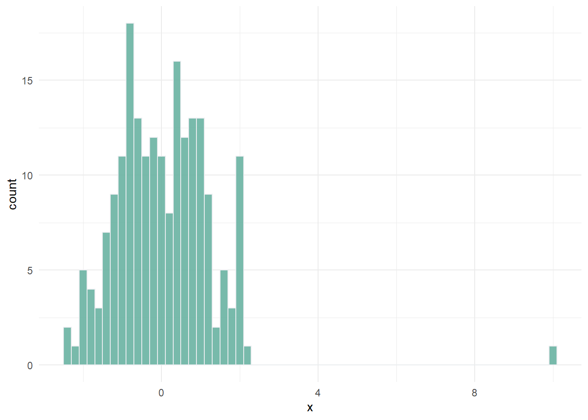
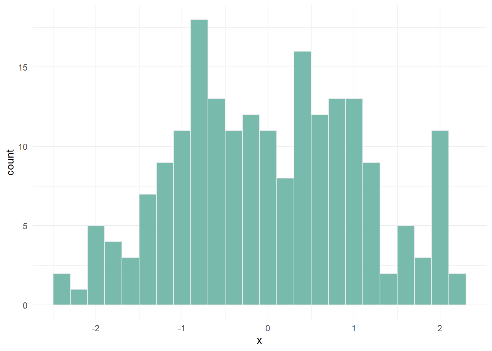
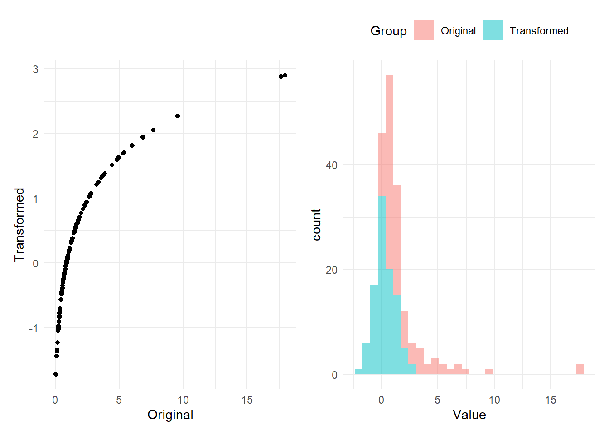
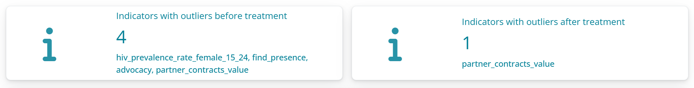
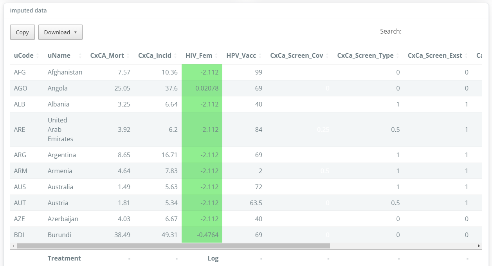
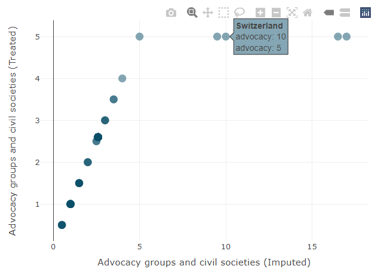

7 Outlier treatment
Outlier treatment is the process of altering indicator values to improve their statistical properties, mainly for the purposes of aggregation.
Data treatment is a delicate subject, because it essentially involves changing the values of certain observations, or transforming an entire distribution. This entails balancing two opposing considerations:
- On the one hand, treatment should be used as sparingly, because you are altering one or more known data points.
- On the other hand, this is only done for the purposes of aggregation (i.e. creating a composite score), and since composite indicators are normally presented with the index scores and original data accessible underneath, the underlying data would normally be presented in its original form.
Therefore, be careful, but also realise that data treatment is not unnerving or unethical, it’s simply another assumption in a statistical process. Like any other step or assumption though, any data treatment should be carefully recorded and its implications understood.
7.1 About
Before explaining how to treat outliers, let’s explain the “why”. Outliers are roughly defined as data points that don’t fit the rest of the distribution. Consider the artificial example below.
Here, clearly the data point with a value of 10, does not fit the rest of the distribution.
Outliers can exist because of errors in measurement and data processing, and should always be double-checked. But often, they are simply a reflection of reality. Outliers and skewed distributions are common in socio-economic variables.
The reason why we may want to treat outliers is that in composite indicators, before aggregating we typically normalise the data by scaling it onto a common range (e.g. 0-100). In the above example, this would mean that most units would get a low score, because the scale has been defined by the outlier.
This may or may not be the result you wish to obtain. If, for that indicator, you wish to acknowledge that the outlying point is exceptional, then it is better not to treat the data. If however, you would like the scale to be more defined by the large majority of points, you may wish to treat the outlier. This would mean that the outlier still has the highest score, but not by so much.
Again, this does involve changing data points, but it is only done in order to more effectively aggregate indicators together.
The {composer} app has an automatic outlier treatment algorithm which treats outliers at a single click. The methodology follows that used by the European Commission, among others, and is as follows.
For each indicator separately:
- Check skew and kurtosis value
- If absolute skew is greater than 2 AND kurtosis is greater than 3.5:
- Successively Winsorise up to a maximum of five points. If either skew or kurtosis goes below thresholds, stop. If after reaching the maximum number of points, both thresholds are still exceeded, then:
- Return the indicator to its original state, and perform a modified log transformation.
- If the indicator does not exceed both thresholds, leave it untreated.
Here, the skew and kurtosis thresholds are used as simple indicators of distributions with outliers.
Winsorisation involves reassigning outlying points to the next highest or lowest point, depending on the direction of the outlier. In the example above, this would involve taking the outlier with a value of 10, and reassigning it to the maximum value of the observed points except that one. This would result in the following:

This treatment can be applied iteratively, in case of multiple outliers.
The log transformation involves applying a scaled log-transformation that reshapes the entire distribution. It is most suitable for naturally skewed distributions such as log-normal distributions.
\[ x' = \log(x-\min(x) + a)\\ \text{where:} \;\;\; a = 0.01(\max(x)-\min(x))` \]
This transformation is effectively a log transformation with a small shift, which ensures that negative values can also be transformed. It looks like this:

This shows that the initially skewed distribution with outliers has been transformed to a distribution that is reasonably normal-looking. It has also had the effect of changing the scale of the distribution, but this doesn’t matter because all indicators will anyway be normalised onto a common scale - see Chapter 8.
7.2 How
The outlier treatment algorithm is automatically implemented in the {composer} app. There are no parameters to adjust here, it is simply a choice of running the data treatment procedure, or not. To run data treatment, click the “Run” button.

On running the treatment, the app will return a summary of which indicators had outliers before treatment (using the skew and kurtosis thresholds mentioned above), and any that still have outliers after treatment (since outlier treatment does not always successfully deal with all outliers).
A table of data is also generated which highlights points that have been Winsorised or log-transformed, and summarises the data treatment applied to each indicator.

Clicking on a column in the table will plot the indicator before and after treatment, showing how the data points have been changed. In the example below, four points have been Winsorised.
